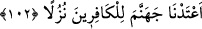

Bununla beraber onlar Hak’tan aşırı sağırlıkları, Rasûlullah (s.a.)’e karşı şiddetli
buğz ve düşmanlıklarından dolayı “kulak vermeye de” benim zikrimi ve kelâmımı
dinlemeye de “tahammül edemez olanlardı.” Yâni, onların durumu sağırdan daha
beterdi. Çünkü sağır, bâzen kendisine bağırıldığı zaman işitir. Bunlardan bu kabiliyet de
giderilmiştir.
Ey ümmetlerin önderi, sen Kur’an okuyunca
Ben onların kulaklarına sağırlıktan perde koyarım
Gözlerine de göz bağı çekerim
Böylece görmezler ve senin kelâmını işitmezler
el-İrşad’da şöyle der: “Bu, onların sem‘î delillerden yüz çevirmelerinin bir
temsîlidir. Nitekim birinci kısım da, gözle müşâhede edilen âyetlerden kör oluşlarının
bir tasvîri idi. “
Büyüklerden biri şöyle der: “Onların nefislerinin gözleri, ibret nazarından gafletle
perdelenmiştir. Kalplerinin gözleri de âhiretin derecelerini ve derekelerini görmeye
mâni olan dünya muhabbeti ve şehvet perdeleriyle perdelenmiştir. Sırlarının gözleri ise
yaratanın âyetlerini müşâhedeye karşı dünya ve âhirete iltifat perdesiyle perdelenmiştir.
Ruhlarının gözleri, mâsivallah perdesiyle Allah Teâlâ’yı zikirden perdelenmiştir. Bâtın
gözü müşâhede ile açılınca, zâhir gözü de ibret nazarıyla açılır. Yine zâhirdeki işitme
vâsıtası (kulak), batın kulağına tâbidir. Hz. Mustafa (s.a.)’in sünnetlerini ve sâlihlerin
sîretlerini dinlemek de, Hak kelâmını dinlemeye dâhildir.”
102. Kâfirler, beni bırakıp da kullarımı dostlar edineceklerini mi sandılar? Biz
cehennemi kâfirlere bir konak olarak hazırladık.
“Kâfirler, beni bırakıp da kullarımı dostlar edineceklerini mi sandılar?” Âyetin
başındaki hemze, inkâr ve azarlamak içindir. Zikredilen şeyin kötü ve münker olduğunu
bildirmek ve reddetmek için kullanılır. Hemzeden sonraki “Fâ” harfi, sılanın açıkladığı
mukadder bir fiile atıf içindir. İnkar ve azarlamanın her iki ma‘tûfa da yönelik olduğuna
delâlet eder. Takdîri şöyledir: ‘Benim celâl ve azametimle beraber bana küfrederler ve
zannederler mi?” Yâni, kafirler bana ubûdiyyet ve kulluğu terk edip benim melekût ve
gücüm altındaki melek ve insanları, Îsâ ve Uzeyr gibi kullarımı azabıma karşı
kendilerine yardım edecek benden başka mâbudlar mı edindiler?
Mâbud edinme, iki taraftan olması gereken bir durum olduğu için, kâfirlerin Allah’ın
bu kullarını mâbud edinmesi hiçbir şey ifâde etmez. Çünkü onlar: “Sen yücesin, bizim